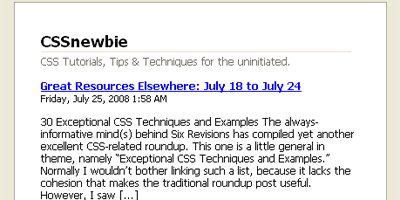

I’ve been doing a bit of research lately on creating RSS-only content for my website – that is, content that shows up in my RSS feed and nowhere else. My research has a specific purpose: I’m planning to start a contest on CSSnewbie in the very near future. The contest would by available only to people who subscribe to my RSS feed, meaning I’d need to provide some sort of clue or password in my RSS, but nowhere else.
My searching has lead me to two very nice WordPress plugins that should do the job that I need to do. I’ve also come up with a way to accomplish the same feat using just HTML and CSS.
The first WordPress plugin I came across is called RSS Footer (you can find RSS Footer here). It’s a simple plugin, originally written in order to include some sort of a copyright message at the top or bottom of your RSS entries. This in itself probably wouldn’t be a bad idea – there’s a lot of websites out there that simply grab random articles with certain keywords from other sites and display them as their own. I know that a lot of CSSnewbie articles, for example, end up on other sites.
However, it occurs to me that this plugin could also be used to insert some sort of a “secret” message to your RSS subscribers. Just install the plugin, write your message, and the plugin will automatically bypass your website’s content and insert your message into the RSS feed, before it gets shipped off to the end user (or to services like FeedBurner). Viola! Instant contest.
Or, if you’d prefer a little more flexibility in your options, the Feed Footer WordPress plugin might be a better way to go (get a copy of Feed Footer here). Feed Footer is similar to RSS Footer, in that it allows you to insert arbitrary content into your RSS feed before your users or FeedBurner see it. However, Feed Footer’s solution is a little different. When using Feed Footer, you cannot insert your content into the top of your RSS entries – it has to appear at the bottom (hence “footer,” I suppose). However, instead of a single boilerplate message, you can include up to ten different messages in your feed, which will rotate through as you add new articles to your website.
There are many benefits to this option, not the least of which as it relates to advertising. Using Feed Footer, you could insert several different advertisements into your RSS feed and have them rotate through. But there are also benefits as it relates to our contest idea: you needn’t give the same clue/password/whatever on the same two days. In fact, maybe only one out of every three blog posts even has a clue, requiring your subscribers to stay subscribed (and active) for long enough to find the message.
But what if you aren’t using WordPress, or feel like a plugin might be overkill in this situation? Well, there’s another option out there, an HTML- and CSS-only option.
This idea takes advantage of the fact that, unlike screen and print versions of your website, your RSS feed tends to be unstyled – all those fancy CSS rules you write for your website get stripped away when readers use the RSS feed instead. Normally, I see that as a bit of a downside, but in this instance, it’s perfect for what we want to do.
In this scenario, our “secret message” is included as part of the regular article. We just do our best to ensure that only those who are meant to see it (i.e., the RSS readers) ever do.
We’ll start by giving our secret message a CSS class, something like “rssonly” or the like:
<p class="rssonly">Be sure to drink
your Ovaltine!</p>
Now, all we need to do is create a CSS rule that ensures that the message we’ve written doesn’t see the light of day in normal circumstances:
.rssonly {
display: none; }
That’s really the fundamentals of it right there. Be sure to add the class to both your screen and print stylesheets (assuming you have both). This will prevent the text from showing up on the screen or page, but it’ll be plain as day in your RSS feed.
Of course, what’s to stop some unscrupulous soul from looking at your website’s source code and divining the answer without having to subscribe to your feed? Not much at all, that’s what. Although, you could make the quest a little more difficult by encoding your message by converting your text to its ASCII equivalents. All you need to do is find a simple text-to-HTML-ASCII converter online, type in your message, and then copy the resulting HTML codes into your page. For example, when converting our secret message above, we get something like this:
<p class="rssonly">Be
 sur
e to 
drin
k yo
ur O
valt
ine
!</p>
When displayed on the screen (in, say, an RSS feed), the content would be perfectly readable. But it looks like an awful lot of gibberish if you’re just viewing the source code. And sure, someone could still take the time to decode your ASCII entities and avoid subscribing to your RSS feed that way. But really, if they’re willing to do that much work up front, I think I’m okay with that. :)
I’m not yet sure which of these options I’ll be using in my own contest. Do you have any other WordPress or homegrown solutions that you know about? If so, I’d love to hear about them in the comments. I’ll be announcing more about this upcoming contest in the next week or thereabouts, so you might want to subscribe to my RSS feed now so you don’t miss any of the details!
Obfuscation isn’t security. I know this isn’t sensitive user data or anything, but the idea of hiding stuff in NCRs should never be encouraged–you don’t know if someone who doesn’t know any better might try it for important data. And if I turn style sheets off, hello secret message.
Use one of the plugins. Ozh’s BetterFeed is good, too.
You make a good point, James. And I’ll reiterate that important point:
Security through obscurity is never a good idea. Never “hide” something on a page if you don’t want it found.
However, that being said, I’m not shooting for security here. I’m shooting for obscurity only. If someone happens across this particular secret message, it wouldn’t be the end of the world. It’d just turn my contest into… well, into a contest just like any other sweepstakes-style contest in the real world: no purchase necessary. :)
Pingback: CSSnewbie Subscriber Contest! - CSSnewbie
Pingback: SEO ROI » A Domain Name Gold Rush…
Pingback: Saint John Web Design | Informative Computer Solutions » Blog Archive » CSS Newbie + Twitter = CushyCMS Pro Contest!
I am looking for a script that replaces a bunch of code(like the embedded YouTube video code) with “See the video on site, as it is not playable in Feed”.
What do you say? Is it possible for Blogger blog to have such script.
I am looking for a script that replaces a bunch of code(like the embedded YouTube video code) with “See the video on site, as it is not playable in Feed” when viewed in blog feed.
What do you say? Is it possible for Blogger blog to have such script.